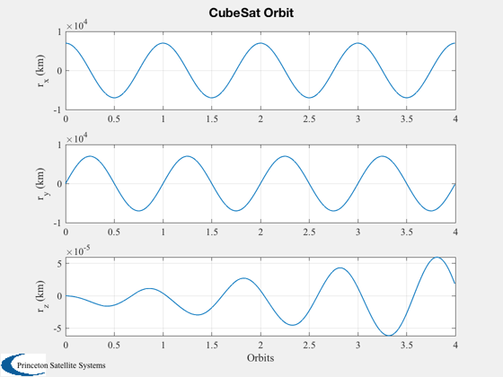
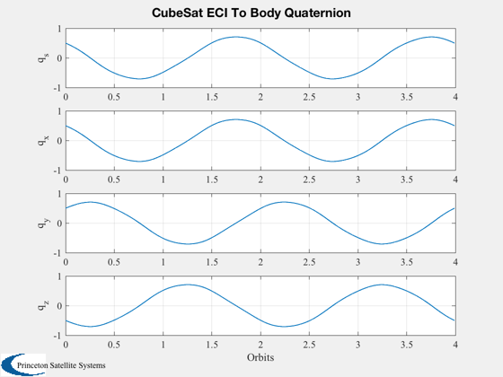
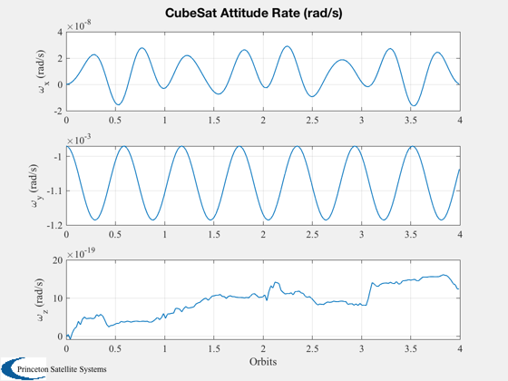
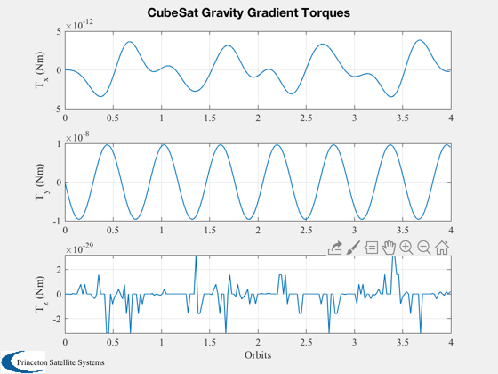
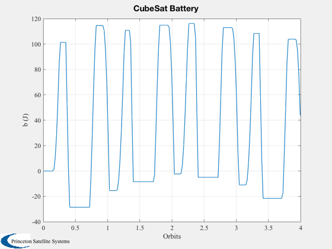
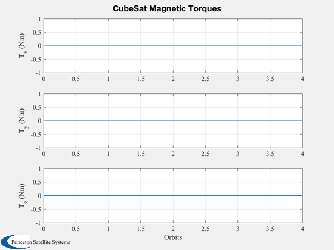
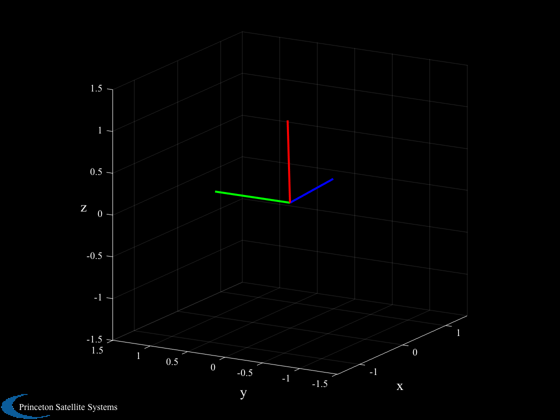

Demonstrate a CubeSat with gravity gradient stabilization.
The gravity gradient boom is along the Z axis in the body frame, and produces restoring torques around X and Y. ---------------------------------------------------------------------- See also AnimQ, QForm, Plot2D, TimeLabl, RK4, Skew, Date2JD, RHSCubeSat, BDipole ------------------------------------------------------------------------
Contents
%------------------------------------------------------------------------ % Copyright (c) 2009 Princeton Satellite Systems, Inc. % All rights reserved. %------------------------------------------------------------------------ % Since version 10. % 2016.0.1 - Fix velocity calulation to use VOrbit since mu is no longer in % RHS structure % 2017.1 - Fix mass properties calculation to use AddMass %------------------------------------------------------------------------
CubeSat model
%------------- model = '1U';
Start with defaults for the RHS
%---------------------------------
d = RHSCubeSat;
Initial state vector for a circular orbit
%------------------------------------------ a = 7000; % km v = VOrbit(a); pOrb = Period(a); % State is [position;velocity;quaternion;angular velocity; battery charge] % CubeSats are about 1 kg per U %------------------------------------------------------------------------- r0 = [a;0;0]; v0 = [0;v;0]; q = QLVLH( r0, v0 ); % Orbit rate is what we expect in the stable system. Introduce some offset % to reveal the libration frequency. w = [0;-0.9*OrbRate(a);0]; b = 0; x = [r0; v0; q; w; b];
Start Julian date
%------------------ d.jD0 = Date2JD([2012 4 5 0 0 0]); d.rP = 6378.165; % Mass properties %---------------- % The true inertia will be somewhat assymmetric. Always start with a % symmetric inertia for code testing. Try switching between the simplified % and true inertias. % For modeling the gravity gradient boom, put a mass of 0.1 kg 50 cm from % the CM of the spacecraft. mSat = 0.85; Isat = InertiaCubeSat( model, mSat ); rCM = [0;0;0]; sat = MassStructure(mSat, Isat, [0;0;0] ); mGG = 0.1; rGG = [0;0;0.5]; Iboom = -mGG*SkewSq( rGG ); % point mass inertia boom = MassStructure(mGG, Iboom, rGG ); mass = AddMass( [sat boom] ); d.inertia = mass.inertia; %d.inertia = diag([0.03 0.03 0.001]); % symmetric d.mass = mass.mass; s = LibrationFrequency( d.inertia, OrbRate(a) ); % Libration frequencies are around 1.7-2X orbit rate
Remove aero model.
The drag is very small at this altitude and the simulation is much faster without these calculations.
%-------------------
d.aeroData = [];
Add power system model
%-----------------------
d.power.solarCellNormal = [1 -1;0 0;0 0];
d.power.solarCellEff = 0.15;
d.power.effPowerConversion = 0.8;
d.power.solarCellArea = 0.1*0.05*[1 1];
d.power.consumption = 0.5;
d.power.batteryCapacity = 100;
Initialize control
%-------------------
d.dipole = [0;0;0];
Simulation duration
%--------------------
orbits = 4;
tEnd = pOrb*orbits;
Time step
%----------
dT = 120;
nSim = floor(tEnd/dT);
Initialize the plotting aray to save time
%------------------------------------------
xPlot = [x zeros(14,nSim)];
[xT, distur, tGG] = RHSCubeSat( x, 0, d );
dragPlot = [distur.fAerodyn zeros(3,nSim)];
tAeroPlot = [distur.tAerodyn zeros(3,nSim)];
tMagPlot = [distur.tMag zeros(3,nSim)];
tGGPlot = [distur.tGG zeros(3,nSim)];
qLPlot = zeros(4,nSim);
Run the simulation
%------------------- t = 0; h = waitbar(0,'CubeSat Simulation'); for k = 1:nSim % Magnetic field - the magnetometer output is proportional to this %----------------------------------------------------------------- bField = QForm( x(7:10), BDipole( x(1:3), d.jD0+t/86400 ) ); % Control system placeholder %--------------------------- % dipole from air-core torquers d.dipole = [0.0;0;0]; % Amp-turns m^2 % A time step with 4th order Runge-Kutta %--------------------------------------- x = RK4( @RHSCubeSat, x, dT, t, d ); % Obtain effect of drag and control %---------------------------------- [xT, dist] = RHSCubeSat( x, t, d ); dragPlot(:,k+1) = dist.fAerodyn; tAeroPlot(:,k+1) = dist.tAerodyn; tMagPlot(:,k+1) = dist.tMag; tGGPlot(:,k+1) = dist.tGG; % Update plotting and time %------------------------- qLVLHToBody = QMult( QPose(QLVLH(x(1:3),x(4:6))), x(7:10) ); qLPlot(:,k) = qLVLHToBody; xPlot(:,k+1) = x; t = t + dT; waitbar(k/nSim,h); end close(h);
Plotting
%---------
t = (0:nSim)*dT;
Y-axis labels
%-------------- yL = {'r_x (km)' 'r_y (km)' 'r_z (km)' 'v_x (km/s)' 'v_y (km/s)' 'v_z (km/s)'... 'q_s' 'q_x' 'q_y' 'q_z' '\omega_x (rad/s)' '\omega_y (rad/s)' '\omega_z (rad/s)' 'b (J)'};
Plotting
%---------- Plot2D( t/pOrb, xPlot( 1: 3,:), 'Orbits', yL( 1: 3), 'CubeSat Orbit' ); Plot2D( t/pOrb, xPlot( 7:10,:), 'Orbits', yL( 7:10), 'CubeSat ECI To Body Quaternion' ); Plot2D( t/pOrb, xPlot(11:13,:), 'Orbits', yL(11:13), 'CubeSat Attitude Rate (rad/s)' ); Plot2D( t/pOrb, tGGPlot, 'Orbits', {'T_x (Nm)','T_y (Nm)','T_z (Nm)'},'CubeSat Gravity Gradient Torques') Plot2D( t/pOrb, xPlot( 14,:), 'Orbits', yL{14}, 'CubeSat Battery' ); Plot2D( t/pOrb, tMagPlot, 'Orbits', {'T_x (Nm)','T_y (Nm)','T_z (Nm)'},'CubeSat Magnetic Torques') AnimQ( qLPlot ); %--------------------------------------      